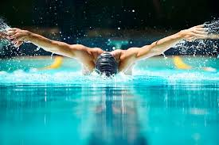

The first school was called Riara Group of schools.Here i attended both kindergarten and Primary school.It was an amazing school where we were taught core moral values that added up to my charachter.I guess the hardest part of primary was towards kcpe when i drowned myself in books. It was like a quarantine from having a social life
After kcpe i went to high school at Alliance high school.I have nothing much to say about this because i didnt like it as much there.Life was hard in a public school but i eventually adapted.Four years past like wildfire and i was done!(thank God)
After high school i really didnt know what to do next so i decided to come here at Moringa School.The experience here is amazing and simple words cannot describe it.I think anyone willing to do programming at any point in their lives should go to Moringa
Hobbies and interests
- Swimming 
- Music
- Travelling
Swimming has always been my favourite sport.Ever since i was a child i have always been taking part in swimming competitions.I guess my most successful time during my swimming career was when i was in highschool.I was the Swimming captian of my school and my expertise got me a lot of reputation.I have a wide collections of medals and trophies that i have accumulated over the years.
Music drives me.In most or all the activities I do i incorporate an aspect of rhythm.I couldnt imagine a life without music.My favourite genres are House music,a little bit of hip hop and african music.

New people,food,environments all excite me.I like seeing how other people view the world in their different environments.I am a very outgoing person hence travelling is my kind of thing.I have tread to many places in the country and even the world,each new location bringing its different experiences and life lessons.
Job Experience/Community Service
I dont have as much job experience but i have been involved in a lot of community service throughout my life.From school to church and even at home.I have a certain concerns for the society's welfare which motivates me to engage in community work.